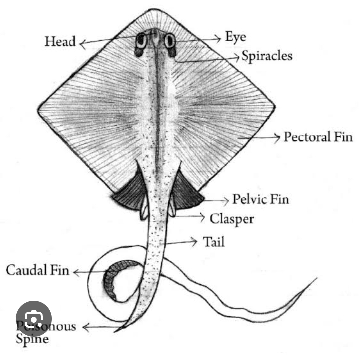

Practical on Trygon (Stingray)
Introduction
Trygon (commonly known as Stingray) is a cartilaginous fish belonging to the family Dasyatidae. It is known for its flattened body and venomous tail spine.
Scientific Classification
- Kingdom: Animalia
- Phylum: Chordata
- Class: Chondrichthyes
- Order: Myliobatiformes
- Family: Dasyatidae
- Genus: Trygon
Morphology
- Flattened, disc-shaped body with wing-like pectoral fins.
- Long, whip-like tail with venomous spine.
- Ventral mouth and spiracles for breathing.
Habitat & Distribution
- Found in coastal waters, estuaries, and sandy seabeds worldwide.
- Often buries itself in sand to avoid predators.
Diagram

Fig: External structure of Trygon
Conclusion
Trygon is an important marine species known for its unique defense mechanism. Conservation efforts should focus on habitat protection and sustainable fishing.